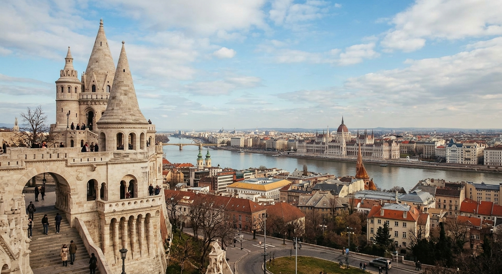
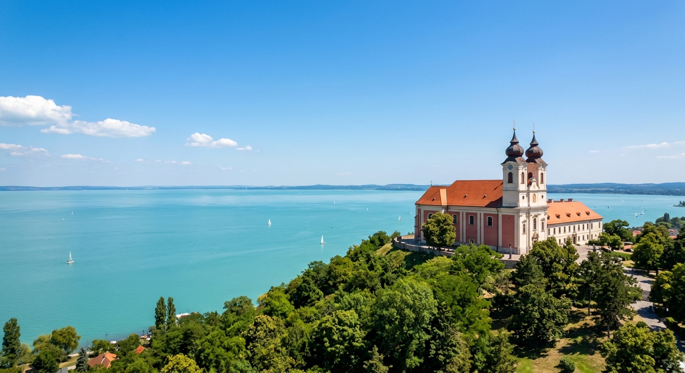
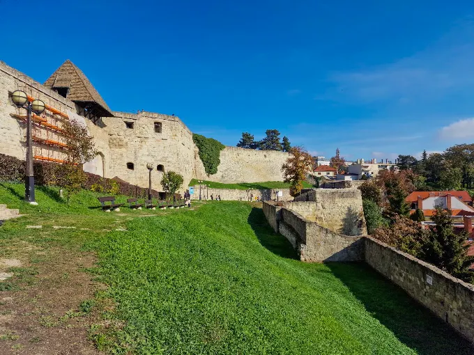
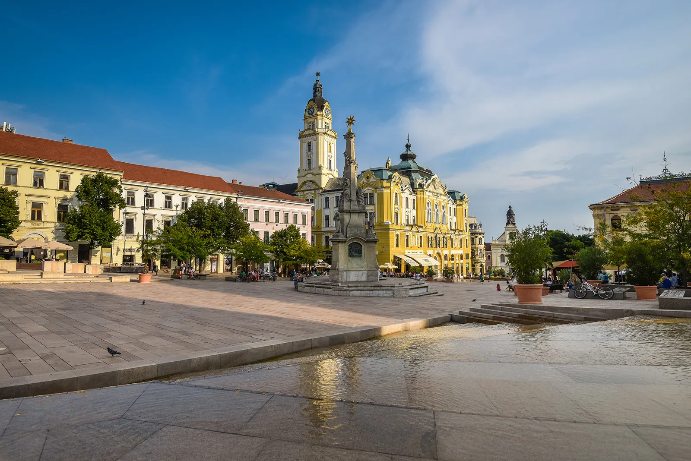
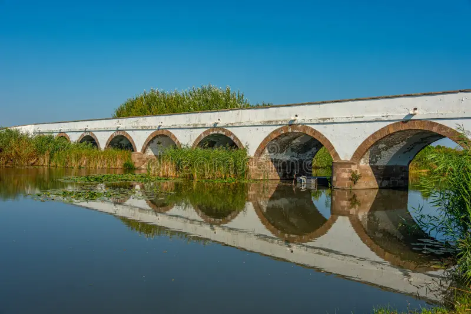
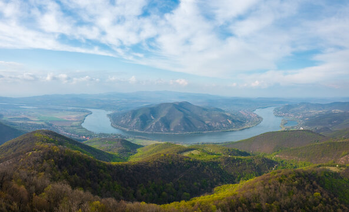

Az ország legnépszerűbb városai és természeti értékei röviden.

A főváros főbb nevezetességei a Budai Várnegyed, a Halászbástya, a Lánchíd és a Duna-parti Országház.

Közép-Európa legnagyobb tava remek strandokkal, a tihanyi Bencés Apátsággal és nyári levendulásokkal.

Történelmi váráról, barokk belvárosáról, a török minaretről és a Szépasszony-völgy borospincéiről híres.

Mediterrán hangulatú város UNESCO világörökségi ókeresztény sírkamrákkal és a Zsolnay Negyeddel.

A magyar puszta otthona, ahol a Kilenclyukú híd, a szürkemarhák és a hagyományos pásztorélet látható.

A Duna festői kanyarulata, amelyre a Visegrádi Fellegvárból nyílik az egyik legszebb panoráma.
| Régió | Kiemelt Helyszín | Fő Vonzereje |
|---|---|---|
| Észak-Magyarország | Miskolctapolca, Tokaj | Barlangfürdő és világhírű borvidék |
| Dunántúl | Tihany, Sopron, Hévíz | Balaton, történelmi belváros és gyógytó |
| Alföld | Szeged, Debrecen | Dóm tér, Nagytemplom és napsütéses klíma |